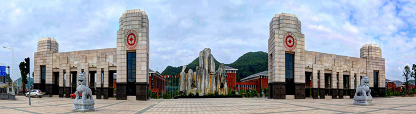

贵州财经大学： （GuiZhou University of Finance and Economics）,简称“贵州财大”或“贵财”，创办于1958年，原名贵州财经学院，2012年，经教育部批准更名为贵州财经大学，是贵州省委、省政府重点建设的贵州省经济管理人才培养基地。著名经济学家、“孙冶方经济学奖”获得者、南京大学原党委书记洪银兴教授任贵州财经大学名誉校长。这是一所以经济学、管理学为主体，法学、哲学、文学、教育学、艺术学、理学、工学等多学科协调发展的财经类大学，是贵州省委、省政府重点建设的贵州省经济管理人才培养基地，入选贵州省一流大学专业重点建设项目、贵州省一流大学一流平台建设（培育）项目、全国第二批深化创新创业教育改革示范高校。
学校创办于1958年，原名贵州财经学院，1992年与贵州计划管理干部学校合并，2012年经教育部批准更名为贵州财经大学，2018年增列为博士学位授予单位。
截至2018年12月，学校拥有花溪、河滨和鹿冲关三个校区，占地总面积5106.8亩，总建筑面积106万平方米，仪器设备总值4.3亿元；图书馆馆藏纸质图书221万余册，电子图书160万余册，电子期刊3.6万余种；承办有国家统计局与贵州省人民政府共办的大数据统计学院1个，设有学院（部）17个；有本科专业62个，涵盖8个学科门类；有全日制在校生2.2万余人，其中：本科生1.9万余人，硕士研究生1796人，留学生21人；有教职工2009人，专任教师1297人；有2个一级学科博士学位授权点，8个一级学科硕士学位授权点，12个硕士专业学位授权点；设有省级重点实验室3个，省级协同创新中心2个，省级科研机构（基地）5个，省级工程研究中心1个，省级大学科创园1个，省级创新团队5个；获批贵州省人才培养基地5个；设有校级科研机构42个。
学校承办有国家统计局和贵州省人民政府共办的大数据统计学院1个。设有学院（部）18个，其中包含1个开放型的贵阳大数据金融学院，1个不具有法人资格的中外合作办学机构——西密歇根学院。现有全日制在校生2.2万余人，其中：本科生1.9万余人，研究生2067人，留学生65人。有教职工1959人，专任教师1250人，其中高级职称842人，拥有博士学位566人，博士生导师21人，享受国务院政府特殊津贴专家4人，享受省政府特殊津贴专家10人，贵州省省管专家12人，核心专家2人，黔灵学者2人，省级教学名师6人，全国优秀教师1人，“西部之光”访问学者16人；贵州省高层次创新型人才“百”层次2人，贵州省高层次创新型人才“千”层次12人。获全国社科联创建新型智库1个，省级新型特色智库1个。
学校坚持学科专业建设协调发展，有1个博士后科研流动站，2个博士学位授权一级学科，9个硕士学位授权一级学科，12个硕士专业学位授权类别，6个区域内一流建设学科，6个省级特色重点学科，10个省级重点学科。有本科专业64个，涵盖8个学科门类，其中：国家级特色专业6个，省级示范专业9个，省级特色专业4个。有国家级经济管理实验教学示范中心1个，国家级经济管理虚拟仿真实验教学中心1个，国家级人才培养模式创新实验区1个，省级实验教学示范中心3个，省级大学科技园1个，纳入省级众创空间管理的众创空间1个。有23个贵州省一流大学专业建设项目，2个贵州省一流大学一流平台建设（培育）项目，4个贵州省一流大学师资团队建设（培育）项目，3个贵州省一流大学课程建设（培育）项目，5个省级教学团队，13门省级精品课程。形成了以经济学、管理学为主体，以法学、工学为支撑，以文学、理学为基础，以教育学和艺术学为补充，多学科协调发展的学科专业体系。
学校坚持“立足贵州、面向西南、辐射全国”的服务定位，重视平台建设和科研服务，现设有省级重点实验室4个，省级协同创新中心2个，省级人才培养、培训基地7个，省级工程研究中心1个、省级创新团队5个、省级研究中心（院）5个。设置科研机构42个，初步形成了绿色发展、反贫困、生态经济、山地经济、经济史及农村金融等特色研究领域和人才培养特色。《贵州财经大学学报》入选中文核心期刊要目总览、中文社会科学引文索引（CSSCI）、中国人文社会科学期刊A刊核心、人大复印报刊资料重要转载来源期刊。
学校坚持开放办学，不断拓展国内外交流和研究的战略合作。先后与中央财经大学、南京大学等高校建立了科研教学合作伙伴关系；与俄罗斯普列汉诺夫大学、印度尼西亚特里沙克旅游学院、英国哈德斯菲尔德大学、澳门大学、泰国苏南拉里理工大学等高校合作开展教师培训、教师互派。与匈牙利多瑙新城大学、乌拉圭奥特大学、马来西亚友尼达国际大学、拉曼大学、泰国北碧皇家大学、四色菊皇家大学、日本大和语言学校等合作开展科研和留学生短期交流项目；与莫桑比克贵州商会建立了战略合作伙伴关系。与美国西密歇根大学合作举办的贵州财经大学西密歇根学院，是贵州省第一个本科中外合作办学机构；与英国爱丁堡龙比亚大学、美国马歇尔大学合作举办2个本科中外合作办学项目；与美国伯克莱学院合作举办4个专科中外合作办学项目；与国家留学基金管理委员会合作举办4个国际本科学术互认课程（ISEC）项目；现有合作办学本专科学生5328人。开设有计划外全日制高等国际职业教育项目，在校学生2975人。积极参与中华文化传播和汉语国际推广工作，与非洲厄立特里亚政府合作建有1所孔子学院。
在新的历史起点上，学校坚持党的领导，坚持社会主义办学方向，坚持立德树人，聚焦第一次党代会提出的“一个主基调、两个发展极、三个着力点、四个新维度”的发展战略，励精图治，奋发进取，不断提升人才培养水平，增强科学研究能力，积极服务经济社会发展，深入推进文化传承创新，不断扩大国际交流合作，努力把贵州财经大学建设成为有特色、高水平财经大学。（更新于2019年11月）
